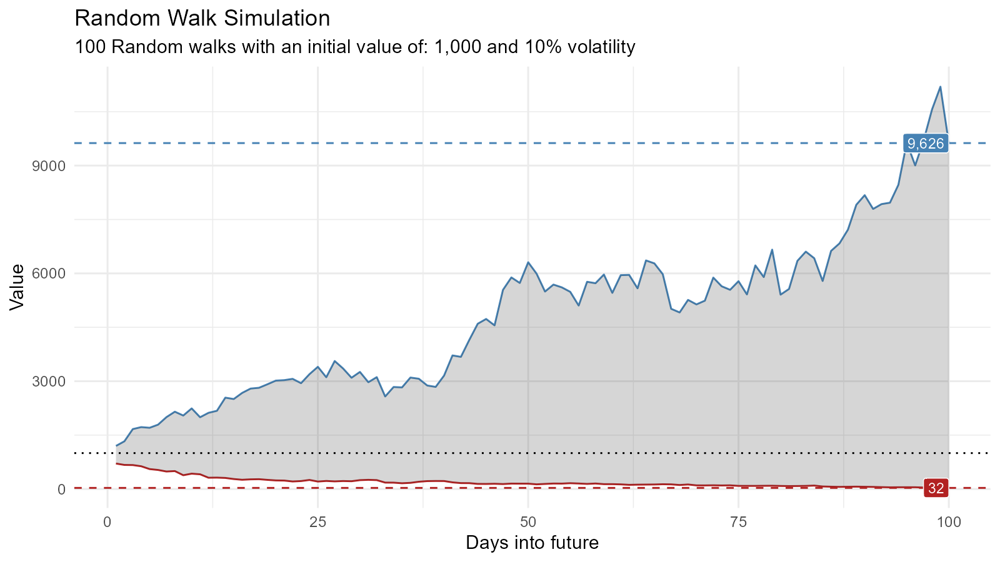

Getting Started with healthyR.ts
A Quick Introduction
Steven P. Sanderson II, MPH
2022-04-18
Source:vignettes/getting-started.Rmd
getting-started.RmdLets load in the libraries
Lets generage data and take a look
df <- ts_random_walk()
head(df)
#> # A tibble: 6 x 4
#> run x y cum_y
#> <dbl> <dbl> <dbl> <dbl>
#> 1 1 1 -0.0781 922.
#> 2 1 2 0.157 1067.
#> 3 1 3 0.0461 1116.
#> 4 1 4 -0.111 992.
#> 5 1 5 0.0158 1008.
#> 6 1 6 0.0888 1097.
glimpse(df)
#> Rows: 10,000
#> Columns: 4
#> $ run <dbl> 1, 1, 1, 1, 1, 1, 1, 1, 1, 1, 1, 1, 1, 1, 1, 1, 1, 1, 1, 1, 1, 1~
#> $ x <dbl> 1, 2, 3, 4, 5, 6, 7, 8, 9, 10, 11, 12, 13, 14, 15, 16, 17, 18, 1~
#> $ y <dbl> -0.078060070, 0.157261688, 0.046126834, -0.111074326, 0.01578062~
#> $ cum_y <dbl> 921.9399, 1066.9258, 1116.1397, 992.1652, 1007.8222, 1097.3596, ~Now that the data has been generated, lets take a look at it.
df %>%
ggplot(
mapping = aes(
x = x
, y = cum_y
, color = factor(run)
, group = factor(run)
)
) +
geom_line(alpha = 0.8) +
ts_random_walk_ggplot_layers(df)
That is still pretty noisy, so lets see this in a different way. Lets clear this up a bit to make it easier to see the full range of the possible volatility of the random walks.
library(dplyr)
library(ggplot2)
df %>%
group_by(x) %>%
summarise(
min_y = min(cum_y),
max_y = max(cum_y)
) %>%
ggplot(
aes(x = x)
) +
geom_line(aes(y = max_y), color = "steelblue") +
geom_line(aes(y = min_y), color = "firebrick") +
geom_ribbon(aes(ymin = min_y, ymax = max_y), alpha = 0.2) +
ts_random_walk_ggplot_layers(df)
Lets look at volatility from several different percentages.
# Random Walk for volatility range 1-15%
df1 <- ts_random_walk(.sd = 0.01)
df2 <- ts_random_walk(.sd = 0.05)
df3 <- ts_random_walk(.sd = 0.10)
df4 <- ts_random_walk(.sd = 0.15)
# Merge data frames into one
df_merged <- dplyr::bind_rows(
df1 %>% mutate(ver = "A) Vol 1%"),
df2 %>% mutate(ver = "B) Vol 5%"),
df3 %>% mutate(ver = "C) Vol 10%"),
df4 %>% mutate(ver = "D) Vol 15%")
)
# Plot range between minimum and maximum values
df_merged %>%
ggplot(aes(
x = x, y = cum_y,
color = factor(run), group = factor(run)
)) +
geom_line(alpha = 0.8) +
labs(title = "", x = "", y = "") +
facet_wrap(~ver, scales = "free") +
scale_y_continuous(labels = scales::comma) +
theme(legend.position = "none")